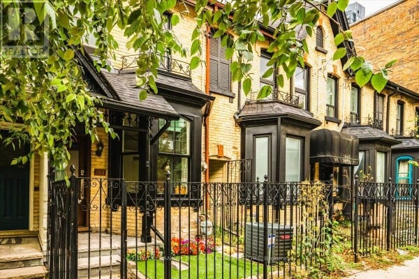

Welcome to your stunning Victorian home nestled in the heart of Toronto's historic Cabbagetown neighborhood. With picturesque tree-lined streets, vibrant parks, a dog friendly community atmosphere and rich architectural heritage, Cabbagetown offers the perfect blend of small-town charm and urban convenience. This home exudes historic charm and character at every turn. From its ornate gingerbread trim to its original hardwood floors and soaring ceilings, this home is a true architectural gem. This home offers ample space for comfortable living and entertaining, while retaining its historic charm, this home also boasts modern amenities and upgrades for today's lifestyle. Enjoy the convenience of 2 central air conditioning units for custom climate from top to bottom, a fully renovated kitchen and bathrooms, step outside to your own private oasis in the heart of the city. Located on a small, quiet and safe one-way street just steps from Cabbagetown's charming shops, cafes, and restaurants, this home offers the best of city living with a small-town feel. Walkable to Riverdale Farm, two subway and streetcar stops, TMU and schools, as well as to the vibrant 'Village' and Dundas Square, this is truly a central location. EXTRAS Home boasts 2 heating/cooling systems for custom temperature control.
102 BLEECKER ST, Toronto, ON M4X1L8
$1,580,000 CAD

Click on the picture above to see more details of this property
| Details of this property | |
|---|---|
| Lot Size | 3800 Square |
| Bathrooms | 3 |
| Property Type | Townhouse |
| Date Listed | 04/13/2024 |
| Bedrooms | 6 |
| Subdivision | Cabbagetown-South St. James Town |
| Cooling | Central Air Conditioning |
| Heating | Forced Air, Natural Gas |
| Association Fee | $700 |
| Terms | Cash, Conventional, FHA, VA Loan |